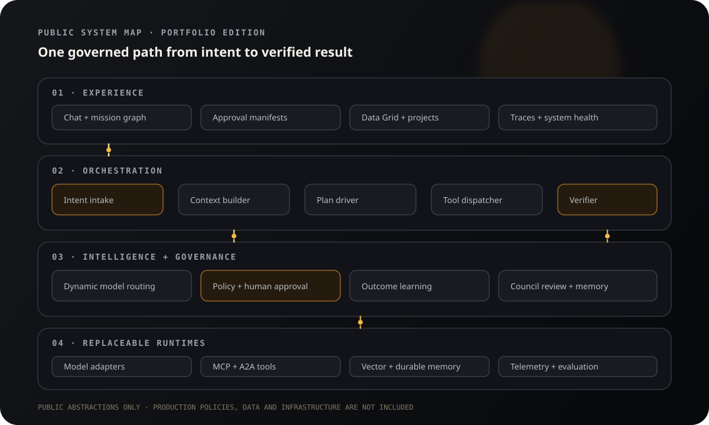

Routing intelligence
Task shape, runtime health, capability fit, and prior outcomes inform a replaceable model route.
intentfitroute
Agent Forge is a multi-model orchestration system designed around dynamic routing, explicit approval boundaries, durable context, and observable execution.
 FORGE
FORGE
This deterministic simulation communicates the product model without connecting to production runtimes or revealing private policies.
Repository-scale reasoning with a review boundary.
93% fit
READ/workspace/sample/src/router.tsLOWPROPOSE/workspace/sample/docs/refactor-plan.mdREVIEWStatic checks, test plan, and public-boundary assertions attached to the proposed result.
Task shape, runtime health, capability fit, and prior outcomes inform a replaceable model route.
Actions are scoped, surfaced, and paused at explicit human approval boundaries.
Session state, project memory, and outcome signals remain distinct and auditable.
Every stage has a reason, state, timing, and verification contract—so a green proxy is never confused with a healthy application.
The public architecture preserves system relationships and engineering judgment while intentionally withholding production policies, source, infrastructure, prompts, and data.

This repository is intentionally a curated portfolio edition—not a production mirror.
Read the exact boundary →
BUILT BY PRASHANT DIMRI